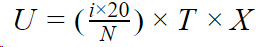

Скорость пополнения -- это скорость, с которой должны обучаться на ту или иную работу жители тайла.
Скорость пополнения (U) зависит от следующих показателей:
На данный момент формула выглядит так:

Часть в скобках - уровень образования в тайле (идеально >= 1/20 населения)